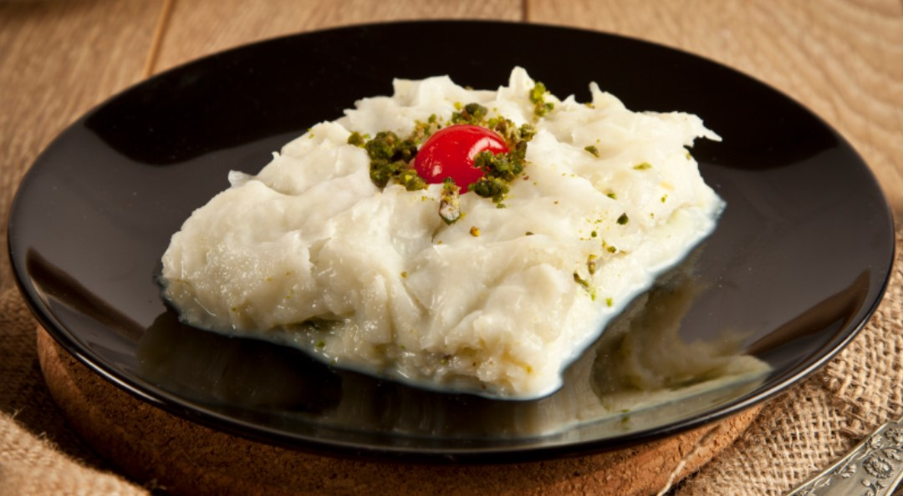

Gullac

Description
Gullac dessert is a special food served during the month of Ramadan. You can't see it anywhere other than this month. This is why it is special. The sheets are simply made of corn starch, wheat flour and water. They are soaked in sweetened warm milk, layered with walnuts and chilled.
Ingredients
- gullac sheets
- milk
- sugar
- crumbled walnuts
- ground pistachio and pomegranate arils for garnish
Prep Steps
- First, prepare the milk.
- Second, make the layers in a pan.
- Spread the crumbled walnut on it
- Then put the rest five sheets one by one and wet each of them with milk.
- Cover it with stretch film and put it in refrigerator for at least 2 hours.
- Garnish it.